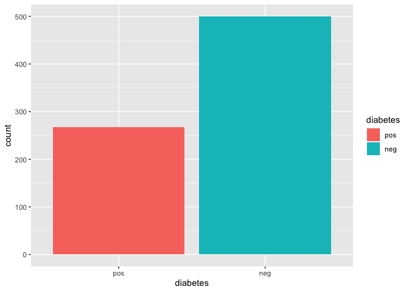
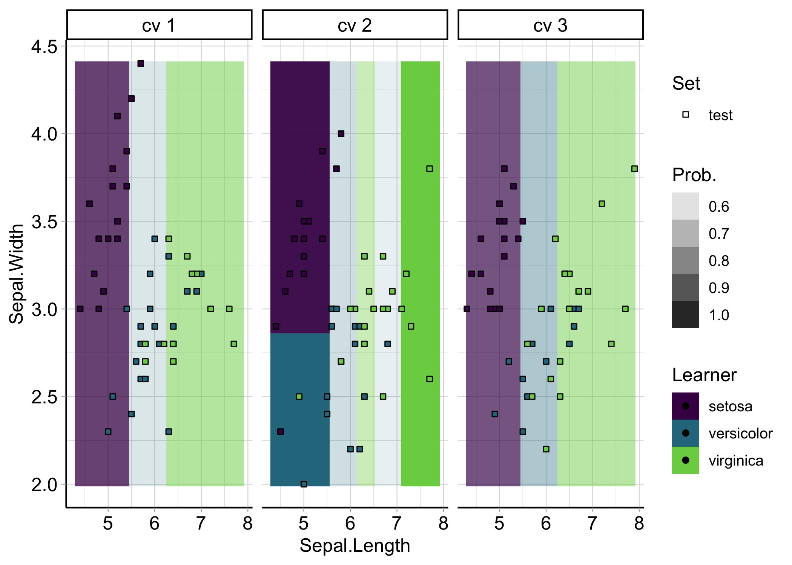

Package website: release | dev
This R package provides visualizations for mlr3 objects such as tasks, predictions, resample results or benchmark results via the autoplot() generic of ggplot2.
Installation
Install the last release from CRAN:
install.packages("mlr3")Install the development version from GitHub:
remotes::install_github("mlr-org/mlr3viz")Short Demo
library(mlr3)
library(mlr3viz)
task = tsk("iris")$select(c("Sepal.Length", "Sepal.Width"))
learner = lrn("classif.rpart", predict_type = "prob")
rr = resample(task, learner, rsmp("cv", folds = 3), store_models = TRUE)
# Default plot for task
autoplot(task)
# Advanced resample result prediction plot
autoplot(rr, type = "prediction")
For more examples plots you can have a look at the pkgdown references of the respective functions.
Theming
{mlr3viz} styles all plots with it’s own theme theme_mlr3() (which is heavily influenced by the ggpubr::theme_pubr() theme) and the “viridis” color palette. If you want to use a different theme or color palette, apply it after the autoplot() call as in
autoplot(<object>) +
scale_color_discrete() +
theme_gray()For color scheme adjustments you might need to change *_color_* to *_fill_* or *_*_discrete to *_*_cotinuous, depending on the object that was visualized.
For even more control, you can look up the source code which ggplot2 geoms were used internally for a specific autoplot() call (e.g. geom_point()) and how they were called. You can then apply these lines again with different arguments after the autoplot() call (similar as shown above with the theme_gray() adjustment) to overwrite their appearance (for example point size, line width, etc.).